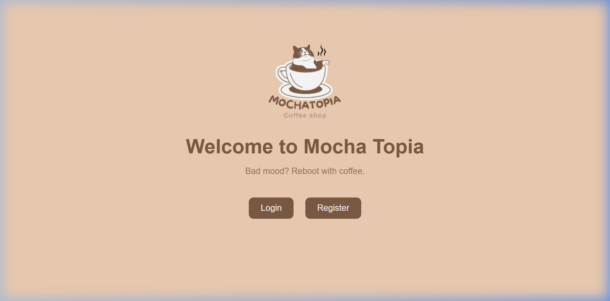
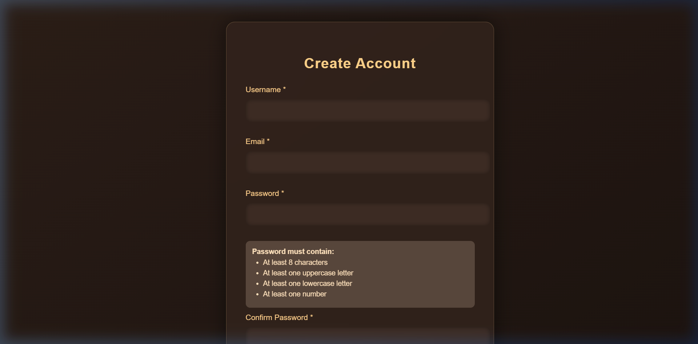
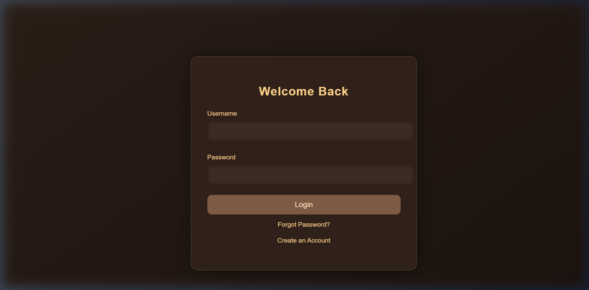
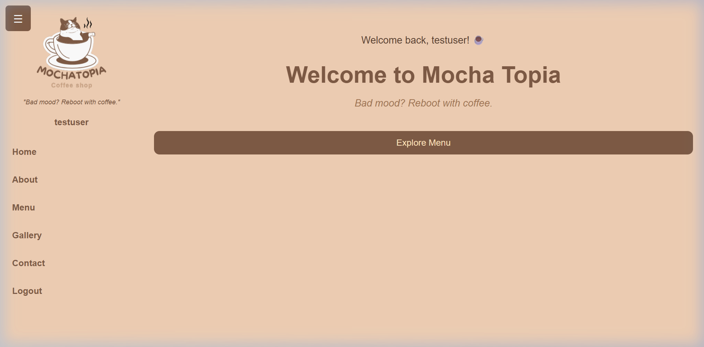

| Field | Group Response |
|---|---|
| Group Number | Group 04 (adjust to your assigned group number) |
| Project Title | Mocha Topia — Coffee Shop Web Application |
| Group Members & IDs |
1. Faiz (Student ID: [Enter Student ID])2. Immanuel (Student ID: [Enter Student ID])3. Dwisasono (Student ID: [Enter Student ID])
|
| Repository URL | https://github.com/[YOUR_USERNAME]/mocha-topia |
| Git Working Branch | chore/dockerize-project (merged into master) |
| Demonstration Video URL | [Paste YouTube or Google Drive Video Link Here] (Max 20 min) |
Before introducing Docker, the project baseline was tested to confirm that all core functionality operates cleanly without container errors.
| Baseline Item | Group Response |
|---|---|
| Project name and repository | Mocha Topia (https://github.com/[YOUR_USERNAME]/mocha-topia) |
| Main user or purpose | Coffee shop customers browsing drink/food menus, placing orders, and contacting the café |
| Technology stack | HTML5, CSS3, JavaScript (ES6), jQuery 3.6.0 (CDN) |
| Normal start command | Open index.html directly in a modern web browser |
| Application port | N/A locally (static files); served on container port 80 via Nginx |
| Required environment variables | None (client-side web application) |
| Supporting services | None (browser localStorage persists accounts and cart state) |
| Core function for verification | 1. User Registration, 2. Login Authentication, 3. Menu Browsing & Cart Management |
The application architecture was evaluated to create the most minimal, secure, and performant container image:
| Design Element | Decision | Technical Rationale |
|---|---|---|
| Base Image | nginx:1.27-alpine |
Alpine Linux footprint (~5MB) yields a production image of only 77.9 MB. Node.js or Ubuntu would introduce unnecessary 150MB+ runtimes for static assets. |
| Image Name & Tag | mocha-topia:week6 |
Complies with the required <group-name>/<project-name>:week6 tag convention. |
| Container Port | Port 80 → Host 8080 |
Container listens on default HTTP port 80; mapped to host port 8080 to prevent conflicts with host services. |
| Environment Variables | .env.example template |
Zero-configuration design; no sensitive secrets or keys are hardcoded or baked into the image. |
| Exclusions | .dockerignore |
Excludes .git, .env, IDE directories, and documentation from build context. |
FROM nginx:1.27-alpine
WORKDIR /usr/share/nginx/html
RUN rm -rf ./*
COPY . .
COPY nginx.conf /etc/nginx/conf.d/default.conf
EXPOSE 80
CMD ["nginx", "-g", "daemon off;"]Build Command: docker build -t mocha-topia:week6 . (or docker compose up --build -d)
docker image ls):PS C:\Users\Lenovo\OneDrive\Documents\mocha-topia> docker image ls mocha-topia-app
REPOSITORY TAG IMAGE ID CREATED SIZE
mocha-topia-app latest 11e3760d75f0 18 hours ago 77.9MB
PS C:\Users\Lenovo\OneDrive\Documents\mocha-topia> docker image ls mocha-topia
REPOSITORY TAG IMAGE ID CREATED SIZE
mocha-topia week6 439512f21080 1 hour ago 77.9MBBuild Explanation: All 7 layers completed without warnings. The resulting image size is 77.9 MB, creating a fast-pulling, lightweight container.
Run Command: docker compose up -d
docker compose ps):NAME IMAGE COMMAND SERVICE STATUS PORTS
mocha-topia-app mocha-topia-app "/docker-entrypoint.…" app Up (healthy) 0.0.0.0:8080->80/tcpdocker compose logs):mocha-topia-app | /docker-entrypoint.sh: Configuration complete; ready for start up
mocha-topia-app | 2026/10/18 04:10:26 [notice] 1#1: using the "epoll" event method
mocha-topia-app | 2026/10/18 04:10:26 [notice] 1#1: nginx/1.27.5
mocha-topia-app | 2026/10/18 04:10:26 [notice] 1#1: start worker processescurl.exe -I http://localhost:8080):HTTP/1.1 200 OK
Server: nginx/1.27.5
Date: Sun, 18 Oct 2026 04:54:19 GMT
Content-Type: text/html
Content-Length: 1133
Connection: keep-alive| Check ID | Verification Action | Expected Result | Actual Result / Evidence | Status |
|---|---|---|---|---|
| V-01 | Container & Service Status | Status Up on port 8080 | Container active; 0.0.0.0:8080->80/tcp | ✅ PASS |
| V-02 | HTTP Availability | Status Code 200 OK returned | HTTP/1.1 200 OK from Nginx 1.27.5 | ✅ PASS |
| V-03 | Core Feature: User Registration | User profile saved in localStorage | Validation passes, account registered | ✅ PASS |
| V-04 | Core Feature: User Login | Authentication succeeds | Redirected to main dashboard session | ✅ PASS |
| V-05 | Core Feature: Menu & Cart | Items added and totals calculated | Cart dynamically updates quantities and prices | ✅ PASS |
| V-06 | Container Restart Lifecycle | Stack restarts cleanly | docker compose restart preserves state |
✅ PASS |




A member from another group conducted the peer handover test to prove that the instructions in README.md are reproducible from a fresh clone.
| Handover Record | Response |
|---|---|
| Verifier Name | [Enter Reviewer Name from Other Group] |
| Verifier Group Number | [Enter Other Group's Number] |
| Device / Operating System | Windows 11 / Docker Desktop v28.x |
| Fresh Clone Completed? | Yes (Cloned branch chore/dockerize-project) |
| Image Build Successful? | Yes (Built cleanly in ~15 seconds) |
| Application Start Successful? | Yes (Accessible at http://localhost:8080) |
| Core Functions Verified? | Yes (Registration, Login, and Cart tested) |
| Problems Found & Corrections Made | PowerShell curl alias caused drive lookup issue. Documented using curl.exe or direct browser access in README. |
| Diagnosis Step | Details |
|---|---|
| Real Problem | Bind for 0.0.0.0:8080 failed: port is already allocated during container startup. |
| Root Cause | A previous container was started with standalone docker run. Running docker compose down later only cleaned up Compose-managed containers, leaving the standalone container running and holding port 8080. |
| Diagnostic Evidence | docker ps -a revealed container ID f73254a70c8a active on port 8080 under name mocha-topia-app. |
| Solution Applied | Ran docker stop mocha-topia-app && docker rm mocha-topia-app, then restarted cleanly with docker compose up -d. |
| Lesson Learned | Do not mix standalone docker run and docker compose workflows. Always standardize on Docker Compose across all developer instructions. |
Contribution breakdown for all team members as required by Table 5.1:
| Member / Student ID | Specific Contribution | Commit / PR Evidence | Concept the Member Can Explain |
|---|---|---|---|
Faiz[Student ID] |
Authored Dockerfile, customized nginx.conf Gzip & cache rules, solved port allocation conflict, and verified browser workflows. |
Commits: 91dd342, 1fcd381PR: chore/dockerize-project |
Base image selection (Nginx Alpine vs Node.js), build caching, and foreground process execution (daemon off;). |
Immanuel[Student ID] |
Configured compose.yaml service definitions, host-container port mapping, and constructed .dockerignore rules. |
Commits: 91dd342, f37f0d7PR: chore/dockerize-project |
Port binding (8080:80), Compose service definitions, and security benefits of excluding secrets via .dockerignore. |
Dwisasono[Student ID] |
Led handover testing with peer group, executed test matrix (V-01 through V-06), and documented troubleshooting procedures. | Commits: f37f0d7, 1fcd381PR: chore/dockerize-project |
Handover reproducibility criteria, container inspection commands (ps, logs, inspect), and lifecycle teardown. |